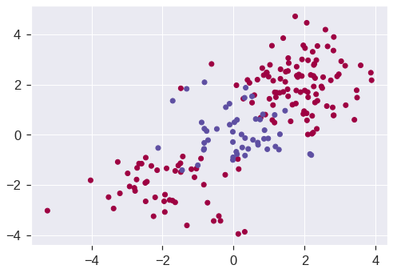

import pandas as pd
import numpy as np
from sklearn.utils import resample
from sklearn.svm import SVC, NuSVC, LinearSVC
from sklearn.linear_model import SGDClassifier
from sklearn.model_selection import train_test_split, KFold, cross_val_score
from sklearn.metrics import confusion_matrix, roc_auc_score, mean_squared_error, roc_curve, accuracy_score
from sklearn.model_selection import GridSearchCV
from mlxtend.plotting import plot_decision_regions
import matplotlib.pyplot as plt
import seaborn as sns
%matplotlib inline
#plt.style.use('seaborn-white')
plt.style.use('seaborn') # pretty matplotlib plots
sns.set_context("notebook", font_scale=1.5, rc={"lines.linewidth": 2.5})9 Support Vector Machines
|
|

|
9.1 Setup
SVC, NuSVC and LinearSVC are classes capable of performing binary and multi-class classification on a dataset. SVC and NuSVC are similar methods, but accept slightly different sets of parameters and have different mathematical formulations. On the other hand, LinearSVC is another (faster) implementation of Support Vector Classification for the case of a linear kernel. Note that LinearSVC does not accept parameter kernel, as this is assumed to be linear. It also lacks some of the attributes of SVC and NuSVC, like support_.
A C argument allows us to specify the cost of a violation to the margin. When the C argument is small, then the margins will be wide and many support vectors will be on the margin or will violate the margin. When the C argument is large, then the margins will be narrow and there will be few support vectors on the margin or violating the margin.
9.2 Support Vector Classifier
We now use the function to fit the support vector classifier for a given value of the C parameter. Here we demonstrate the use of this function on a two-dimensional example so that we can plot the resulting decision boundary. We begin by generating the observations, which belong to two classes, and checking whether the classes are linearly separable.
# Generating random data: 20 observations of 2 features and divide into two classes.
np.random.seed(5)
X = np.random.randn(20,2)
y = np.repeat([-1,1], 10)
X[y == 1, :] += 1
plt.scatter(X[:,0], X[:,1], s=70, c=y, cmap=plt.cm.Paired)
plt.xlabel('X1')
plt.ylabel('X2')Text(0, 0.5, 'X2')
The region of feature space that will be assigned to the −1 class is shown in light blue, and the region that will be assigned to the +1 class is shown in brown. The decision boundary between the two classes is linear (because we used the argument kernel="linear).
plot_decision_regions(X, y, clf=svc_clf, X_highlight=svc_clf.support_vectors_, legend=2)
print('Number of support vectors: ', svc_clf.support_.shape[0])/usr/local/lib/python3.7/dist-packages/mlxtend/plotting/decision_regions.py:244: MatplotlibDeprecationWarning: Passing unsupported keyword arguments to axis() will raise a TypeError in 3.3.
ax.axis(xmin=xx.min(), xmax=xx.max(), y_min=yy.min(), y_max=yy.max())
/usr/local/lib/python3.7/dist-packages/mlxtend/plotting/decision_regions.py:313: MatplotlibDeprecationWarning: Using a string of single character colors as a color sequence is deprecated. Use an explicit list instead.
**scatter_highlight_kwargs)Number of support vectors: 13We see here that there are 13 support vectors. We can determine their identities as follows:
| 0 | 1 | |
|---|---|---|
| 0 | 0.441227 | -0.330870 |
| 1 | 2.430771 | -0.252092 |
| 2 | 0.109610 | 1.582481 |
| 4 | 0.187603 | -0.329870 |
| 6 | -0.358829 | 0.603472 |
| 8 | 1.151391 | 1.857331 |
| 10 | 0.019392 | 0.143147 |
| 11 | 0.128121 | 0.577492 |
| 13 | 1.059144 | 0.636689 |
| 14 | 1.003289 | 0.894070 |
| 15 | 1.793053 | 0.368428 |
| 16 | 0.993805 | 0.898932 |
| 17 | 0.947692 | 1.249218 |
array([ 0, 1, 2, 4, 6, 8, 10, 11, 13, 14, 15, 16, 17], dtype=int32)What if we instead used a smaller value of the C parameter?
svc_clf2 = SVC(kernel='linear', C=0.1)
svc_clf2.fit(X, y)
plot_decision_regions(X, y, clf=svc_clf2, X_highlight=svc_clf2.support_vectors_)
print('Number of support vectors: ', svc_clf2.support_.shape[0])Number of support vectors: 16/usr/local/lib/python3.7/dist-packages/mlxtend/plotting/decision_regions.py:244: MatplotlibDeprecationWarning: Passing unsupported keyword arguments to axis() will raise a TypeError in 3.3.
ax.axis(xmin=xx.min(), xmax=xx.max(), y_min=yy.min(), y_max=yy.max())
/usr/local/lib/python3.7/dist-packages/mlxtend/plotting/decision_regions.py:313: MatplotlibDeprecationWarning: Using a string of single character colors as a color sequence is deprecated. Use an explicit list instead.
**scatter_highlight_kwargs)Now that a smaller value of the C parameter is being used, we obtain a larger number of support vectors, because the margin is now wider.
We now perform CV to determine the optimal value of C:
k = 5
kf5 = KFold(n_splits=k, shuffle=True, random_state=1)
svc_clf3 = SVC(kernel='linear')
c_space = np.array([0.001, 0.01, 0.1, 1, 5, 10, 100])
param_grid = {'C': c_space}
tune = GridSearchCV(svc_clf3, param_grid, cv=kf5)
tune.fit(X, y)
print(tune.best_params_)
pd.DataFrame(tune.cv_results_){'C': 0.1}| mean_fit_time | std_fit_time | mean_score_time | std_score_time | param_C | params | split0_test_score | split1_test_score | split2_test_score | split3_test_score | split4_test_score | mean_test_score | std_test_score | rank_test_score | |
|---|---|---|---|---|---|---|---|---|---|---|---|---|---|---|
| 0 | 0.000982 | 0.000299 | 0.000763 | 0.000544 | 0.001 | {'C': 0.001} | 0.75 | 0.75 | 0.25 | 0.25 | 0.75 | 0.55 | 0.244949 | 6 |
| 1 | 0.000736 | 0.000125 | 0.000371 | 0.000064 | 0.01 | {'C': 0.01} | 0.75 | 0.75 | 0.25 | 0.25 | 0.75 | 0.55 | 0.244949 | 6 |
| 2 | 0.000595 | 0.000018 | 0.000331 | 0.000020 | 0.1 | {'C': 0.1} | 0.75 | 0.75 | 0.75 | 1.00 | 0.50 | 0.75 | 0.158114 | 1 |
| 3 | 0.000583 | 0.000026 | 0.000328 | 0.000016 | 1.0 | {'C': 1.0} | 0.75 | 0.75 | 0.50 | 1.00 | 0.50 | 0.70 | 0.187083 | 2 |
| 4 | 0.000604 | 0.000034 | 0.000342 | 0.000028 | 5.0 | {'C': 5.0} | 0.75 | 0.75 | 0.50 | 1.00 | 0.50 | 0.70 | 0.187083 | 2 |
| 5 | 0.000690 | 0.000087 | 0.000394 | 0.000139 | 10.0 | {'C': 10.0} | 0.75 | 0.75 | 0.50 | 1.00 | 0.50 | 0.70 | 0.187083 | 2 |
| 6 | 0.000700 | 0.000021 | 0.000340 | 0.000011 | 100.0 | {'C': 100.0} | 0.75 | 0.75 | 0.50 | 0.50 | 0.50 | 0.60 | 0.122474 | 5 |
C=0.1 is best according to GridSearchCV.
As usual, the predict() function can be used to predict the class label on a set of test observations, at any given value of the C parameter. Let’s generate a test data set:
y_pred = tune.predict(X_test)
pd.DataFrame(confusion_matrix(y_test, y_pred), index=tune.classes_, columns=tune.classes_)| -1 | 1 | |
|---|---|---|
| -1 | 7 | 2 |
| 1 | 1 | 10 |
Thus, with this value of C, 17 of the test observations are correctly classified. What if we had instead used C = 10?
svc_clf4 = SVC(C=10, kernel='linear')
svc_clf4.fit(X, y)
y_pred = svc_clf4.predict(X_test)
pd.DataFrame(confusion_matrix(y_test, y_pred), index=svc_clf4.classes_, columns=svc_clf4.classes_)| -1 | 1 | |
|---|---|---|
| -1 | 7 | 2 |
| 1 | 4 | 7 |
In this case three additional observations are misclassified.
Now consider a situation in which the two classes are linearly separable. Then we can find a separating hyperplane using the SVC() function. We first further separate the two classes in our simulated data so that they are linearly separable:
<matplotlib.collections.PathCollection at 0x7fdd359cafd0>Now the observations are just barely linearly separable. We fit the support vector classifier and plot the resulting hyperplane, using a very large value of C so that no observations are misclassified.
svc_clf5 = SVC(kernel='linear', C=1e5)
svc_clf5 .fit(X, y)
plot_decision_regions(X, y, clf=svc_clf5, X_highlight=svc_clf5.support_vectors_)
print('Number of support vectors: ', svc_clf5.support_.shape[0])/usr/local/lib/python3.7/dist-packages/mlxtend/plotting/decision_regions.py:244: MatplotlibDeprecationWarning: Passing unsupported keyword arguments to axis() will raise a TypeError in 3.3.
ax.axis(xmin=xx.min(), xmax=xx.max(), y_min=yy.min(), y_max=yy.max())
/usr/local/lib/python3.7/dist-packages/mlxtend/plotting/decision_regions.py:313: MatplotlibDeprecationWarning: Using a string of single character colors as a color sequence is deprecated. Use an explicit list instead.
**scatter_highlight_kwargs)Number of support vectors: 3No training errors were made and only three support vectors were used. However, we can see from the figure that the margin is very narrow (because the observations that are not support vectors, indicated as circles, are very close to the decision boundary). It seems likely that this model will perform poorly on test data. Let’s try a smaller value of C:
svc_clf6 = SVC(kernel='linear', C=1)
svc_clf6.fit(X, y)
plot_decision_regions(X, y, clf=svc_clf6, X_highlight=svc_clf6.support_vectors_)/usr/local/lib/python3.7/dist-packages/mlxtend/plotting/decision_regions.py:244: MatplotlibDeprecationWarning: Passing unsupported keyword arguments to axis() will raise a TypeError in 3.3.
ax.axis(xmin=xx.min(), xmax=xx.max(), y_min=yy.min(), y_max=yy.max())
/usr/local/lib/python3.7/dist-packages/mlxtend/plotting/decision_regions.py:313: MatplotlibDeprecationWarning: Using a string of single character colors as a color sequence is deprecated. Use an explicit list instead.
**scatter_highlight_kwargs)<matplotlib.axes._subplots.AxesSubplot at 0x7fdd3583ef10>Using C=1, we misclassify a training observation, but we also obtain a much wider margin and make use of five support vectors. It seems likely that this model will perform better on test data than the model with C.
9.3 The Kernel Method
## Reference https://xavierbourretsicotte.github.io/Kernel_feature_map.html
X, y = make_circles(100, factor=.1, noise=.1, random_state = 0)
Z = feature_map_1(X)
#2D scatter plot
fig = plt.figure(figsize = (16,8))
ax = fig.add_subplot(1, 2, 1)
ax.scatter(X[:,0], X[:,1], c = y, cmap = 'viridis')
ax.set_xlabel('$x_1$')
ax.set_ylabel('$x_2$')
ax.set_title('Original data')
#3D scatter plot
ax = fig.add_subplot(1, 2, 2, projection='3d')
ax.scatter3D(Z[:,0],Z[:,1], Z[:,2],c = y, cmap = 'viridis' ) #,rstride = 5, cstride = 5, cmap = 'jet', alpha = .4, edgecolor = 'none' )
ax.set_xlabel('$z_1$')
ax.set_ylabel('$z_2$')
ax.set_zlabel('$z_3$')
ax.set_title('Transformed data: ')
#SVM using linear kernel with feature map 1
clf = SVC(C = 1, kernel = 'linear')
clf.fit(Z, y)
w = clf.coef_.flatten()
b = clf.intercept_.flatten()
print('w=',w,'b=',b)
# create x,y
xx, yy = np.meshgrid(np.linspace(-1,1), np.linspace(0,1))
# calculate corresponding z
# The equation of the separating plane is given by all x in R^3 such that:
# np.dot(w, x) + b = 0. We should solve for the last coordinate
boundary = (-w[0] * xx - w[1] * yy - b) * 1. /w[2]
# plot the surface
ax.plot_surface(xx, yy, boundary, alpha = .3)
ax.set_ylim(.2,1.2)
ax.set_zlim(-.9,1.1)
#ax.view_init(0, 260)
plt.show()w= [-0.05481854 -2.53191791 -2.52028513] b= [1.14976292]#SVM using kernel 1 - feature map 1
clf2 = SVC(kernel=my_kernel_1)
clf2.fit(X, y)
# predict on training examples - print accuracy score
print('Accuracy score using feature map ',accuracy_score(y, clf2.predict(X)))
print('Accuracy score using feature map ',accuracy_score(y, clf.predict(Z)))Accuracy score using feature map 1.0
Accuracy score using feature map 1.0#Initialize data
h = .01 #Stepsize in the mesh
x_min, x_max = X[:, 0].min() - .5, X[:, 0].max() + .5
y_min, y_max = X[:, 1].min() - .5, X[:, 1].max() + .5
xx, yy = np.meshgrid(np.arange(x_min, x_max, h), np.arange(y_min, y_max, h))
# Predict on meshgrid
Z = clf2.predict(np.c_[xx.ravel(), yy.ravel()])
# Put the result into a color plot
Z = Z.reshape(xx.shape)
plt.figure(figsize = (7,7))
plt.contourf(xx, yy, Z, 1, colors = ['darkblue','yellow'], alpha = .1) # plot coutour surface
plt.contour(xx, yy, Z, cmap = 'viridis') # plot coutour line
# Plot also the training points
plt.scatter(X[:, 0], X[:, 1], c=y, cmap='viridis', edgecolors = 'k')
plt.title('Support Vector Machine with polynomial'
' kernel')
plt.xlabel('$x_1$')
plt.ylabel('$x_2$')Text(0, 0.5, '$x_2$')9.4 Support Vector Machine
In order to fit an SVM using a non-linear kernel, we once again use the SVC() function. However, now we use a different value of the parameter kernel. To fit an SVM with a polynomial kernel we use kernel="poly", and to fit an SVM with a radial kernel we use kernel="rbf". In the former case we also use the degree argument to specify a degree for the polynomial kernel, and in the latter case we use \(\gamma\) to specify a value of \(\gamma\) for the radial basis kernel.
Let’s generate some data with a non-linear class boundary:
np.random.seed(42)
X = np.random.normal(size=400).reshape(200, 2)
X[0:100, :] += 2
X[100:150, :] -= 2
y = np.concatenate((np.full(150, -1, dtype=np.int64), np.full(50, 1, dtype=np.int64)))
plt.scatter(X[:, 0], X[:, 1], c=y, cmap='Spectral')<matplotlib.collections.PathCollection at 0x7fdd32464b50>
See how one class is kind of stuck in the middle of another class? This suggests that we might want to use a radial kernel in our SVM. Now let’s fit the training data using the SVC() function with a radial kernel and \(\gamma = 1\):
svm = SVC(kernel='rbf', gamma=1, C=1)
svm.fit(X_train, y_train)
plot_decision_regions(X_train, y_train, clf=svm, X_highlight=svm.support_vectors_);/usr/local/lib/python3.7/dist-packages/mlxtend/plotting/decision_regions.py:244: MatplotlibDeprecationWarning: Passing unsupported keyword arguments to axis() will raise a TypeError in 3.3.
ax.axis(xmin=xx.min(), xmax=xx.max(), y_min=yy.min(), y_max=yy.max())
/usr/local/lib/python3.7/dist-packages/mlxtend/plotting/decision_regions.py:313: MatplotlibDeprecationWarning: Using a string of single character colors as a color sequence is deprecated. Use an explicit list instead.
**scatter_highlight_kwargs)Not too shabby! The plot shows that the resulting SVM has a decidedly non-linear boundary. We can see from the figure that there are a fair number of training errors in this SVM fit. If we increase the value of C, we can reduce the number of training errors:
svm2 = SVC(kernel='rbf', gamma=1, C=1e5)
svm2.fit(X_train, y_train)
plot_decision_regions(X_train, y_train, clf=svm2, X_highlight=svm2.support_vectors_)/usr/local/lib/python3.7/dist-packages/mlxtend/plotting/decision_regions.py:244: MatplotlibDeprecationWarning: Passing unsupported keyword arguments to axis() will raise a TypeError in 3.3.
ax.axis(xmin=xx.min(), xmax=xx.max(), y_min=yy.min(), y_max=yy.max())
/usr/local/lib/python3.7/dist-packages/mlxtend/plotting/decision_regions.py:313: MatplotlibDeprecationWarning: Using a string of single character colors as a color sequence is deprecated. Use an explicit list instead.
**scatter_highlight_kwargs)<matplotlib.axes._subplots.AxesSubplot at 0x7fdd32506a90>However, this comes at the price of a more irregular decision boundary that seems to be at risk of overfitting the data. We can perform cross-validation using GridSearchCV() to select the best choice of \(\gamma\) and cost for an SVM with a radial kernel:
svm3 = SVC(kernel='rbf')
c_space = np.array([0.1, 1, 10, 100, 1000])
g_space = np.array([0.5, 1, 2, 3, 4])
param_grid = {'C': c_space, 'gamma': g_space}
tune = GridSearchCV(svm3, param_grid, cv=10)
tune.fit(X_train, y_train)
tune.cv_results_
tune.best_params_{'C': 1.0, 'gamma': 0.5}Therefore, the best choice of parameters involves C=1 and gamma=0.5. We can view the test set predictions for this model by applying the predict() function to the test data:
y_pred = tune.predict(X_test)
pd.DataFrame(confusion_matrix(y_test, y_pred), index=tune.classes_, columns=tune.classes_)| -1 | 1 | |
|---|---|---|
| -1 | 67 | 3 |
| 1 | 9 | 21 |
\(12\,\%\) of test observations are misclassified by this SVM.
9.5 ROC Curves
The roc_curve and auc() function from the sklearn.metrics package can be used to produce ROC curves such as those we saw in lecture:
def plot_roc(cls,X,y,title):
probs = cls.predict_proba(X)[:,1]
fpr, tpr, _ = roc_curve(y,probs)
auc = roc_auc_score(y,probs)
plt.figure(figsize = (6,6))
plt.plot(fpr,tpr,label="auc="+str(auc)[0:4],c = 'r')
plt.plot([0,1],[0,1],alpha = 0.1,c = 'b')
plt.xlabel('False Positive Rate')
plt.ylabel('True Positive Rate')
plt.title(title)
plt.legend(loc="lower right")SVMs and support vector classifiers output class labels for each observation. However, it is also possible to obtain fitted values for each observation, which are the numerical scores used to obtain the class labels. For instance, in the case of a support vector classifier, the fitted value for an observation \(X= (X_1, X_2, \ldots, X_p)^T\) takes the form \(\hat{\beta}_0 + \hat{\beta}_1 X_1 + \hat{\beta}_2 X_2 + \cdots + \hat{\beta}_p X_p\). For an SVM with a non-linear kernel, the equation that yields the fitted value is given in (9.23). In essence, the sign of the fitted value determines on which side of the decision boundary the observation lies. Therefore, the relationship between the fitted value and the class prediction for a given observation is simple: if the fitted value exceeds zero then the observation is assigned to one class, and if it is less than zero then it is assigned to the other. Then the predict() function will output the fitted values.
Let’s start by fitting two models, one more flexible than the other:
# More constrained model
svm4 = SVC(kernel='rbf', gamma=2, C=1, probability=True)
svm4.fit(X_train, y_train)
# More flexible model
svm5 = SVC(kernel='rbf', gamma=50, C=1, probability=True)
svm5.fit(X_train, y_train)SVC(C=1, gamma=50, probability=True)SVM appears to be producing accurate predictions. By increasing \(\gamma\) we can produce a more flexible fit and generate further improvements in accuracy.
plot_roc(svm4,X_train,y_train,'training roc, gamma = 2')
plot_roc(svm5,X_train,y_train,'training roc, gamma = 50')However, these ROC curves are all on the training data. We are really more interested in the level of prediction accuracy on the test data. When we compute the ROC curves on the test data, the model with \(\gamma=2\) appears to provide the most accurate results.
9.6 SVM with Multiple Classes
If the response is a factor containing more than two levels, then the svm() function will perform multi-class classification using the one-versus-all approach. We explore that setting here by generating a third class of observations.
np.random.seed(1)
X = np.random.normal(size=400).reshape(200, 2)
X[0:100, :] += 2
X[100:150, :] -= 2
y = np.concatenate((np.full(150, 1, dtype=np.int64), np.full(50, 2, dtype=np.int64)))
X = np.concatenate((X, np.random.normal(size=100).reshape(50, 2)))
y = np.concatenate((y, np.full(50, 0, dtype=np.int64)))
X[y == 0, 1] += 2
plt.scatter(X[:, 0], X[:, 1], c=y+1, cmap='Spectral');We now fit an SVM to the data:
svm_m = SVC(kernel='rbf', C=10, gamma=1, decision_function_shape='ovr')
svm_m.fit(X, y)
print(svm_m.score(X, y))
plot_decision_regions(X, y, clf=svm_m, X_highlight=svm_m.support_vectors_)0.868/usr/local/lib/python3.7/dist-packages/mlxtend/plotting/decision_regions.py:244: MatplotlibDeprecationWarning: Passing unsupported keyword arguments to axis() will raise a TypeError in 3.3.
ax.axis(xmin=xx.min(), xmax=xx.max(), y_min=yy.min(), y_max=yy.max())
/usr/local/lib/python3.7/dist-packages/mlxtend/plotting/decision_regions.py:313: MatplotlibDeprecationWarning: Using a string of single character colors as a color sequence is deprecated. Use an explicit list instead.
**scatter_highlight_kwargs)<matplotlib.axes._subplots.AxesSubplot at 0x7fdd30a2e650>9.7 Application to Gene Expression Data
We now examine the Khan data set, which consists of a number of tissue samples corresponding to four distinct types of small round blue cell tumors. For each tissue sample, gene expression measurements are available. The data set consists of training data, xtrain and ytrain, and testing data, xtest and ytest.
khan_X_train = pd.read_csv('/content/drive/MyDrive/Lab/Data/Khan_xtrain.csv', index_col=0)
khan_y_train = pd.read_csv('/content/drive/MyDrive/Lab/Data/Khan_ytrain.csv', index_col=0)
khan_X_test = pd.read_csv('/content/drive/MyDrive/Lab/Data/Khan_xtest.csv', index_col=0)
khan_y_test = pd.read_csv('/content/drive/MyDrive/Lab/Data/Khan_ytest.csv', index_col=0)We examine the dimension of the data:
((63, 2308), (20, 2308), 63, 20)This data set consists of expression measurements for \(2{,}308\) genes. The training and test sets consist of \(63\) and \(20\) observations respectively.
We will use a support vector approach to predict cancer subtype using gene expression measurements. In this data set, there are a very large number of features relative to the number of observations. This suggests that we should use a linear kernel, because the additional flexibility that will result from using a polynomial or radial kernel is unnecessary.
gene_clf = SVC(kernel='linear', C=10)
gene_clf.fit(khan_X_train, khan_y_train.iloc[:, 0])
khan_y_train_pred = gene_clf.predict(khan_X_train)
pd.DataFrame(confusion_matrix(khan_y_train_pred, khan_y_train), index=gene_clf.classes_, columns=gene_clf.classes_)| 1 | 2 | 3 | 4 | |
|---|---|---|---|---|
| 1 | 8 | 0 | 0 | 0 |
| 2 | 0 | 23 | 0 | 0 |
| 3 | 0 | 0 | 12 | 0 |
| 4 | 0 | 0 | 0 | 20 |
We see that there are no training errors. In fact, this is not surprising, because the large number of variables relative to the number of observations implies that it is easy to find hyperplanes that fully separate the classes. We are most interested not in the support vector classifier’s performance on the training observations, but rather its performance on the test observations.
khan_y_test_pred = gene_clf.predict(khan_X_test)
pd.DataFrame(confusion_matrix(khan_y_test_pred, khan_y_test), index=gene_clf.classes_, columns=gene_clf.classes_)| 1 | 2 | 3 | 4 | |
|---|---|---|---|---|
| 1 | 3 | 0 | 0 | 0 |
| 2 | 0 | 6 | 2 | 0 |
| 3 | 0 | 0 | 4 | 0 |
| 4 | 0 | 0 | 0 | 5 |
We see that using C = 10 yields two test set errors on this data.
9.8 SGD Classifier
from sklearn.datasets import make_blobs
# we create 50 separable points
X, Y = make_blobs(n_samples=50, centers=2, random_state=0, cluster_std=0.60)
# fit the model
clf = SGDClassifier(loss="hinge", alpha=0.01, max_iter=200)
clf.fit(X, Y)
# plot the line, the points, and the nearest vectors to the plane
xx = np.linspace(-1, 5, 10)
yy = np.linspace(-1, 5, 10)
X1, X2 = np.meshgrid(xx, yy)
Z = np.empty(X1.shape)
for (i, j), val in np.ndenumerate(X1):
x1 = val
x2 = X2[i, j]
p = clf.decision_function([[x1, x2]])
Z[i, j] = p[0]
levels = [-1.0, 0.0, 1.0]
linestyles = ["dashed", "solid", "dashed"]
colors = "k"
plt.contour(X1, X2, Z, levels, colors=colors, linestyles=linestyles)
plt.scatter(X[:, 0], X[:, 1], c=Y, cmap=plt.cm.Paired, edgecolor="black", s=20)
plt.axis("tight")
plt.show()np.random.seed(1)
X = np.random.normal(size=400).reshape(200, 2)
X[0:100, :] += 2
X[100:150, :] -= 2
y = np.concatenate((np.full(150, 1, dtype=np.int64), np.full(50, 2, dtype=np.int64)))
X = np.concatenate((X, np.random.normal(size=100).reshape(50, 2)))
y = np.concatenate((y, np.full(50, 0, dtype=np.int64)))
X[y == 0, 1] += 2
plt.scatter(X[:, 0], X[:, 1], c=y+1, cmap='Spectral');